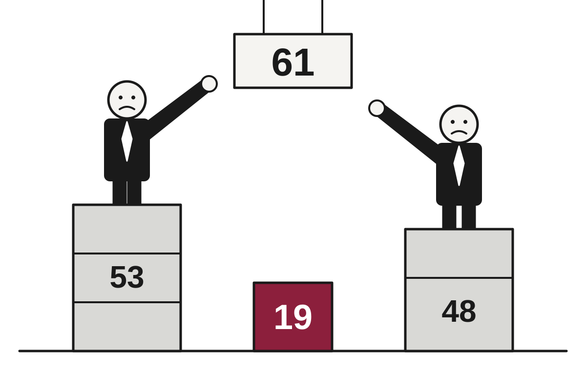

5 Things in 60 Seconds
- Israel's election produced record turnout and no clear winner, with Netanyahu's bloc at 53 seats and Eisenkot's at 48 with 85% counted, both short of the 61 needed, so Arab parties hold the arithmetic and both leaders have already declared victory anyway.
- Brazil's defeated candidate Flávio Bolsonaro flew to Miami via Argentina after refusing to concede and ignoring a court deadline to surrender his passport, a trip he had said he would not make.
- Trump told a Texas rally that Venezuela might become the 51st state while showing off a tanker of Venezuelan oil, months after the U.S. captured Maduro and struck the deal with an interim government it backs.
- Anthropic filed a 335-page IPO prospectus with about 100 pages of risk disclosures, including a line that its technology could pose catastrophic or existential risks to humanity, which is thorough even by lawyers' standards.
- The U.S. ran a $1.992 trillion deficit in fiscal 2026 with the 10-year Treasury yield near 5.1%, and a CNBC survey expects the Fed to hold this week and hike in December, so borrowing is getting pricier on a payment plan nobody can see the end of.

Israel Votes at Record Turnout, Produces Record Uncertainty
With 85% of ballots counted, neither Netanyahu's bloc (53 seats) nor Eisenkot's (48) has the 61 needed, and Arab parties hold the arithmetic.
The wire said: Netanyahu's bloc leading Israel election but short of majority, partial results show · BBC World
Partial results from Israel's election show Prime Minister Benjamin Netanyahu's bloc leading but short of a majority, according to the BBC. With 85% of ballots counted, Likud and its far-right and ultra-Orthodox allies were on track for 53 seats in the 120-seat Knesset. Eisenkot's Yashar party and three other Jewish opposition parties were set for 48. A government needs 61, a number neither side is close to producing.
Translation: the voters have spoken, and what they said was a tie with a few footnotes. Exit polls on election night first gave Eisenkot's "Change Bloc" 52 to 53 seats against 50 for Netanyahu. Broadcasters later revised that to a tie at 51 each in two polls, and a narrow Netanyahu lead in a third. Both men then addressed supporters as if the matter were settled, which it was not.
Geopolitics

Defeated Brazilian Candidate Concedes Nothing, Except Three Countries and a Gulfstream
Flávio Bolsonaro, who lost Sunday's election and refused to concede, landed in Miami after a passport order, a border crossing and two private flights.
Flávio Bolsonaro, the defeated far-right candidate in Brazil's presidential election, landed in Miami on Wednesday morning with his wife and two daughters, according to DW. The family stepped off a Gulfstream G400 at Miami-Opa Locka airport. The trip had begun the previous night in Argentina, which is a notable route for a man who had said two days earlier that he had no intention of leaving the country.
On Monday, Bolsonaro posted on Instagram that he would hand over his passports and defend himself against what he called a travesty. Translation: he would comply with a court order, right up until the deadline. The Guardian reported that a Supreme Court justice cancelled his passport minutes after the result and gave him until 11am Tuesday to surrender it to the federal police. He did not appear.
Serbia Raises Terror Alert to Red After Knife Attack at Israeli Embassy

Police shot dead a minor who attacked a guard in Belgrade, and the interior minister said the attacker was already on security services' radar.
Trump Shows Off One Tanker, Floats Making Venezuela the 51st State

At a Texas rally a week before midterms, the president touted a Venezuelan oil deal he says will lower fuel prices, and mused about annexation.
Kremlin Says Europe Not Invited to Abu Dhabi Talks, Finland Says Otherwise

Moscow and Helsinki gave conflicting accounts of the same 90-minute call, while Britain and the Netherlands pledged billions and a Kherson truce held.
Elsewhere on the wire
Sudan war and inflation leave families struggling to survive in Khartoum Al JazeeraEgypt fines prominent editor Lina Attalah and shuts independent news outlet Mada Masr The GuardianIsrael's election too close to call. And, the Ebola outbreak reaches grim milestone NPR WorldOne year on, families seek justice after election violence DWCanada-EU summit: What do both sides want, and what’s at stake? Al JazeeraAfrica’s ‘unprecedented’ Ebola outbreak could reach UK, says top health official The GuardianAI

Google's Genie 4 Builds Convincing Worlds That Last Two Minutes, Then Forgets Them
DeepMind's new world model adds audio, sharper physics and live prompt editing, but its simulations still lose track of how they began.
Google DeepMind released Genie 4, its newest world model, in research preview on Tuesday, according to TechCrunch. The model generates interactive worlds from a text prompt, now with matching audio, and it can keep a scene consistent for about two minutes, up from one minute for Genie 3, The Verge reported. It is a significant improvement, provided your goals can be accomplished in the time it takes to microwave a burrito.
Translation: a world model does not load a pre-built level the way a video game does. It generates the experience frame by frame as you move through it, so there is no map, no scripted objects and no artist who spent three years on a tavern. You describe what you want and the model improvises it. Ars Technica notes that this is exactly why Genie 3 made the gaming industry nervous.
Anthropic's Bug Bounty Program Works So Well It Found Anthropic's Bugs
Startup Cathedral used AI agents to reach Anthropic's internal sales, HR and IT systems through third-party software, and the two sides now disagree on how long it took and how much was seen.
Parents Sue OpenAI Over Chatbot's Alleged Medical Advice, Citing a Rulebook With Soft Spots

A lawsuit over the death of a 31-year-old Amazon engineer argues OpenAI treats copyright as a hard rule but medication advice as a suggestion.
OpenAI Solves Three Famous Problems, Then Argues With Scientists About Who Gets to Read the Answers
OpenAI and Anthropic say their models broke a core assumption about computational difficulty, and researchers are as irritated by the release plan as they are impressed by the math.
Elsewhere on the wire
Chrome’s AI-powered Autofill can now dig through your Gmail to fill out forms TechCrunch AIChrome’s enhanced autofill can now pull info from Gmail to help you fill out forms The Verge AIThe Download: dead startups fueling AI and interspecies communication MIT Technology ReviewGoogle opens Android development to third-party AI agents and unveils new Gemini APIs The Decoder"No human at the helm": Delaware plan would let AI agents run entire businesses Ars Technica AIAI execs may be too out of touch to build for the general public TechCrunch AITechnology

Sixteen-Year-Old Bug Discovered in Code That Starts Nearly Every Server
A 9.5-severity flaw in open source UEFI firmware code affects most server vendors, and the patch was published before the coordinated disclosure it was supposed to follow.
Ars Technica reported that a code-execution flaw in EDK II, the open source codebase used to build the boot-time firmware for most of the world's servers, has been made public ahead of schedule. The bug, tracked as CVE-2026-97631, is rated 9.5 out of 10 for severity. Virtually all major UEFI suppliers, including AMI, Insyde and Phoenix, use the reference code extensively, as did Microsoft's hardened fork, Project Mu.
Translation: UEFI is the first program a computer runs when you press the power button, and it is supposed to check that everything after it is trustworthy. A flaw there means an attacker gets to speak before the security guard has arrived for work.
Google Unveils Gemini 4 Carbon Two Weeks After Gemini 4 Argon, Releases It to Almost No One

The new model tops an intelligence index and posts large cybersecurity gains, but access starts with a small group of defenders while guardrails are still being adjusted.
Delaware Weighs Letting AI Run Companies; Congress Asks Who Goes to Court

A draft bill would create AI-managed firms with a single human funder shielded from most liability, and the House Oversight chairman wants the paperwork.
Apple Admits Some $2,000 Folding iPhones Developed Screen Lines, Offers Replacements

Days after launch, Apple says an inner-display issue affects 'a small number' of Duos, and declines to say how small.
Elsewhere on the wire
Buckle up for more body-swapping hijinks in Jumanji: Open World trailer Ars Technica'An annoying buzz': The search for stealthier drones BBC TechnologyMacBook Pro with Touch Enabled Proled XDR Display Hacker NewsA hidden ocean change near Antarctica could have global consequences Ars TechnicaMacBook Pro with PROLED XDR Display and Touch Hacker NewsChina’s snooping around Pacific undersea cables raises risks for Big Tech Ars TechnicaMarkets & Economy
Britain's New Chancellor Taxes Banks, Praises Banks, and Asks Banks to Understand
John Healey's first budget lifts the bank surcharge to 6% for 15 months, cuts household energy costs and pledges £10 billion to Ukraine, and bank shares rose anyway.
John Healey, Britain's finance minister, delivered his first budget on Wednesday, announcing help with energy bills, a higher tax on banks, and more money for defense and Ukraine. According to CNBC, markets responded broadly positively, which is the highest grade a chancellor can receive and one that is usually revoked within a few weeks.
The backdrop is unglamorous. Inflation rose to 3.5% in September, driven by fuel costs, and CNBC reported that markets expect the Bank of England to raise interest rates next month. Healey blamed part of the pressure on the U.S.-Iran war, a conflict he said Britain did not want. Translation: Britain imports energy, so it pays for other countries' disagreements at the gas meter.
The relief package is broad. Standing charges on household gas heating bills will be removed, a tax break on electricity is extended through July 2027, and £100 checks go to households in the four lowest local housing tax bands, at a cost of £2.6 billion. Tariffs come off more than 100 grocery products, the minimum wage rises 3.9%, and a planned cut to tax-free savings thresholds was canceled. Translation: standing charges are the fixed fee you pay for the privilege of being connected, before you have used anything.
Nelson Peltz Offers $1.4 Billion to Take Wendy's Private, Citing Need for Money

A Trian-led group bids $7.35 a share, a 20% premium, for a burger chain whose stock is down 65% in two years and which, by its own largest shareholder's account, needs a lot more cash.
Fed Expected to Do Nothing This Week, Then Something Later, Say People Paid to Guess

A CNBC survey finds 93% of 30 forecasters expect a pause now and 76% expect a hike in December, with 10-year yields sitting around 5%.
Stellantis Shares Jump 12% After Losing Slightly Less Cash Than Feared

The Chrysler and Jeep owner posted a 1% revenue gain and reaffirmed its 2026 guidance, which on a bad year counts as a triumph.
| Series | Last | Chg | Period | Trend |
|---|---|---|---|---|
| SPY | $771.03 | +0.18% | +4.05% | |
| Nasdaq | 26,477.81 | +1.18% | +6.20% | |
| VIX | 17.52 | −0.87 | −0.69 | |
| Brent crude | $123.10 | −3.92% | +34.07% | |
| Dollar index | 121.32 | −0.03% | +0.62% | |
| 2Y Treasury | 4.68% | −0.01 | +0.31 | |
| 10Y Treasury | 5.00% | ±0.00 | +0.29 | |
| Fed Funds | 3.88% | ±0.00 | +0.25 | |
| CPI inflation (YoY) | 3.74% | +0.34 | +1.30 | |
| Unemployment | 4.20% | +0.10 | +0.10 |
Elsewhere on the wire
Apple unveils MacBook Pro with touchscreen OLED display Investing.comThe 'Magnificent Seven' is no more. Time to pick winners and losers as group's correlation breaks down CNBC MarketsWorld Bank's Banga: Availability of capital 'not really an issue' as AI demand drives up borrowing costs CNBC EconomyThe U.S. government will no longer penalize American companies for making six popular peptides MarketWatchUS bans imports from BGI Genomics, MGI Tech, citing ties to forced labor in Xinjiang Investing.comApple brings touch to the Mac, reversing years-old stance on touchscreen laptop CNBC MarketsPhoto credits
- Defeated Brazilian Candidate Concedes Nothing, Except Three Countries and a Gulfstream: N2FD Bombardier Challenger 604 s n 5345 (54592639395) by Tomás Del Coro from Fabulous Las Vegas, Nevada, USA, CC BY-SA 4.0, via Wikimedia Commons
- Serbia Raises Terror Alert to Red After Knife Attack at Israeli Embassy: Communal Police automobile at Draže Pavlovića street (Belgrade) by Андрей Романенко, CC BY-SA 4.0, via Wikimedia Commons
- Trump Shows Off One Tanker, Floats Making Venezuela the 51st State: Crude oil tanker Eagle San Diego by Jordanroderick, CC0, via Wikimedia Commons
- Kremlin Says Europe Not Invited to Abu Dhabi Talks, Finland Says Otherwise: Abu Dhabi Skyline by comedian44, CC BY-SA 4.0, via Wikimedia Commons
- Anthropic Files 335-Page IPO Prospectus, Lists Possible End of Humanity Under 'Risks': Frankfurt Stock Exchange (Ank Kumar) 01 by Ank Kumar, CC BY-SA 4.0, via Wikimedia Commons
- Google's Genie 4 Builds Convincing Worlds That Last Two Minutes, Then Forgets Them: Nintendo-Switch-Pro-Controller-FL by Evan-Amos, Public domain, via Wikimedia Commons
- Parents Sue OpenAI Over Chatbot's Alleged Medical Advice, Citing a Rulebook With Soft Spots: ClearRx prescription bottles - Flickr - bartsz by Bart from New York, USA, CC BY 2.0, via Wikimedia Commons
- Apple Adds Touchscreen to MacBook Pro, Quietly Retiring Its Toaster-Refrigerator Theory: Adjusting Ultrabook Setting Using Touchscreen (cropped) by Intel Free Press, CC BY 2.0, via Wikimedia Commons
- Sixteen-Year-Old Bug Discovered in Code That Starts Nearly Every Server: NOIRLab HQ Server Racks (6V6A0375-CC) by NOIRLab/NSF/AURA/T. Slovinský, CC BY 4.0, via Wikimedia Commons
- Google Unveils Gemini 4 Carbon Two Weeks After Gemini 4 Argon, Releases It to Almost No One: NOIRLab HQ Server Racks (6V6A0395-CC) by NOIRLab/NSF/AURA/T. Slovinský, CC BY 4.0, via Wikimedia Commons
- Delaware Weighs Letting AI Run Companies; Congress Asks Who Goes to Court: Delaware Legislative Hall (State Capitol), Dover, Delaware (14423082934) by Ken Lund from Las Vegas, Nevada, USA, CC BY-SA 2.0, via Wikimedia Commons
- Apple Admits Some $2,000 Folding iPhones Developed Screen Lines, Offers Replacements: Foldable Phones by Ka Kit Pang, CC BY 3.0, via Wikimedia Commons
- U.S. Borrows $2 Trillion a Year, Finds Lenders Want 5% to Keep Answering the Phone: Treasury Building (1) by Erich Robert Joli Weber, CC BY-SA 3.0, via Wikimedia Commons
- Nelson Peltz Offers $1.4 Billion to Take Wendy's Private, Citing Need for Money: A modern Burger King fast food restaurant in Ooltewah, Tennessee by Harrison Keely, CC BY 4.0, via Wikimedia Commons
- Fed Expected to Do Nothing This Week, Then Something Later, Say People Paid to Guess: Eccles Building (26088200676) by Federalreserve, Public domain, via Wikimedia Commons
- Stellantis Shares Jump 12% After Losing Slightly Less Cash Than Feared: 001 Car factory assembly line - Opel factory in Gliwice, Poland by Marek Ślusarczyk (Tupungato) Photo portfolio, CC BY 3.0, via Wikimedia Commons